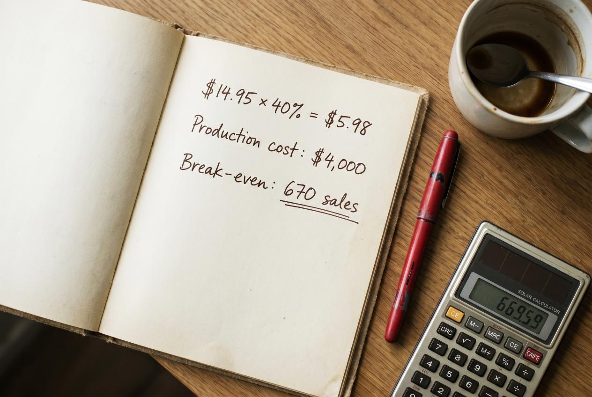
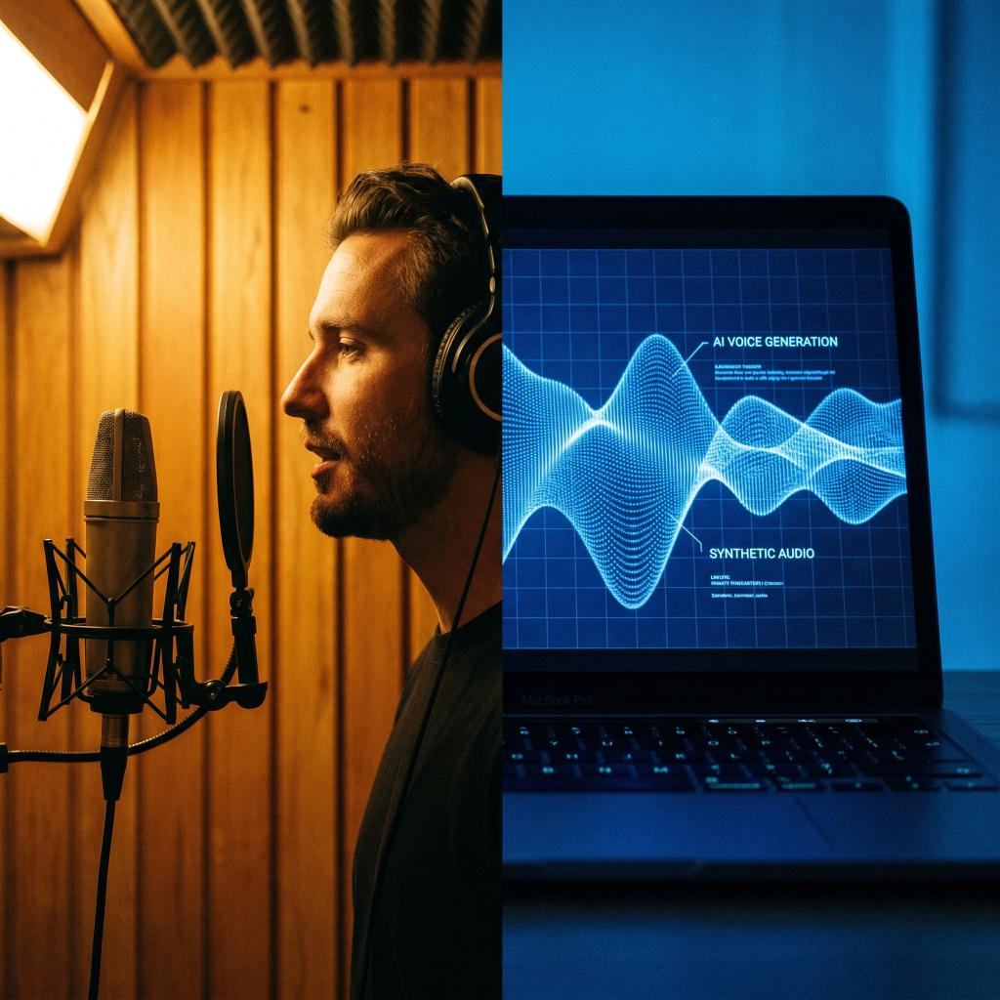

The audiobook market grew 25% year-over-year through 2025 and is on pace to hit $10+ billion globally in 2026. For indie authors, that's tempting — but production costs $1,500 to $5,000 and royalty rates are confusing.
Should you spend the money? This article is the honest math: production costs, royalty structures, AI narration trade-offs, the genres that actually break even, and the patterns that determine whether your specific book will return its investment.
The Three Production Routes (And What They Cost)
Route 1: Hire a Human Narrator (The Standard)
You hire a professional voice actor. They record, edit, master, and deliver finished audio. You retain rights.
Cost via ACX (Amazon-owned audiobook platform):
- Per-finished-hour (PFH) rate: $200-$500 for mid-tier narrators, $500-$1,000 for top-tier
- Average book length: 8-12 finished hours
- Total production cost: $1,600-$12,000, with most indie books landing $2,500-$5,000
Cost via Findaway Voices (Spotify-owned, distributes everywhere):
- Similar PFH rates
- Slightly different talent pool (less Audible-exclusive)
Royalty share alternative: Some narrators take 50% of royalties instead of upfront payment. You pay $0 cash but split lifetime royalties forever. Cheap up-front, expensive long-term if your book sells.
Route 2: Self-Narration (DIY)
You record your own audiobook. Microphone + soundproofed space + editing software + 100-200 hours of your time per book.
Cost: $300-$800 in equipment + your time. Cheap on paper. Expensive in time.
Quality reality: Most indie self-narrators sound noticeably amateur. Reviews mention narration quality directly. The 1-2 star reviews accumulate. Unless you have professional voice training (audiobook listeners detect amateurish performance instantly), this route hurts your overall book reputation.
Exception: Memoir and personal non-fiction often work as self-narrated. Listeners expect to hear the author's actual voice. Fiction does not work this way.
Route 3: AI Narration (New Option, Significant Caveats)
ElevenLabs, Google Studio NotebookLM, and ACX's own Virtual Voice now produce surprisingly competent AI-generated audiobooks.
Cost: $20-$200 per book (ElevenLabs subscription tier) + a few hours of your time per book to clean up.
Quality: 2025-2026 AI narration is good enough for non-fiction (instructional, business, self-help). Still noticeably AI for fiction (emotional cadence, character voices, dialogue rhythm — listeners can tell). Expect to lose some sales from genre fiction listeners who hear the AI quality and refund.
Royalty implication: ACX flags AI-narrated books with "Virtual Voice" labeling, and they're not eligible for the same royalty rates as human-narrated audiobooks. Lower royalties offset some of the production-cost savings.
Royalty Structures (The Real Numbers)

ACX (Audible / Amazon)
ACX has two royalty tiers:
| Distribution | Royalty rate (per sale) |
|---|---|
| Exclusive (ACX/Audible only) | 40% |
| Non-exclusive (also on Apple Books, Spotify, Kobo, etc.) | 25% |
Typical net per sale on a $14.95 audiobook:
- Exclusive: ~$5.98
- Non-exclusive: ~$3.74
The trade-off: Audible has roughly 60-70% of the U.S. audiobook market. Going exclusive doubles your per-sale rate but caps your distribution. Most indie authors start exclusive for the first 3 months, then evaluate going wide.
Findaway Voices (Spotify-owned)
- Distributes to: Audible, Apple Books, Spotify Audiobooks, Kobo, Google Play Books, libraries (OverDrive), and more
- Royalty: ~80% of net (after retailer cut). Per $14.95 sale: typically $4-$7 depending on retailer
- No exclusivity required — this is the wide-distribution alternative to ACX
Apple Books, Google Play (Direct)
You can upload directly. Higher royalties (~70-80% of list price) but you handle metadata, distribution, marketing across each platform yourself.
The Break-Even Math
Let's run real numbers. A book with these characteristics:
- 350-page novel = ~10 finished hours of audio
- Human narrator at $400 PFH = $4,000 production cost
- Sells at $14.95 retail
- ACX exclusive 40% royalty = $5.98 net per sale
Break-even: 670 audiobook sales
Now compare to ebook math:
- Ebook at $4.99 with 70% royalty = $3.49 net per sale
- A book selling 100 ebook copies/month for 12 months = 1,200 sales = $4,188 ebook revenue
- That same audience: maybe 8-15% will buy the audiobook = 96-180 audiobook sales = $574-$1,076 audiobook revenue
For most indie books that sell under 1,000 ebook copies/year, the audiobook loses money unless you're using the AI route or paying narrator royalty-share.
Genres That Actually Pay Back
Audiobook ROI varies dramatically by genre. The 2026 patterns:
High audiobook ROI:
- Romance (especially series with dedicated audiobook listeners — convert 25-40% of ebook readers to audio)
- Thriller / Mystery (commute listeners — high conversion from ebook fans)
- Non-fiction self-help / business (listened during commute, exercise, daily routines — large audience)
- Memoir / Celebrity non-fiction (read by author = compelling)
Medium audiobook ROI:
- Sci-fi / Fantasy (large worlds + listener immersion = good fit, but production complexity adds cost)
- Cozy mystery (light fiction popular with audio listeners)
- YA (only if there's strong reader demand)
Low audiobook ROI:
- Literary fiction (smaller listener base; literary listeners often prefer print)
- Poetry (niche)
- Children's / picture books (won't sell as audio)
- Highly visual content (cookbooks, design books, illustrated guides)
When Audiobook Production Makes Sense
The honest checklist:
-
You have an existing audience for the book — already 500+ ebook copies sold, 50+ reviews. Audiobook converts existing readers; it doesn't usually create new ones.
-
You're in a high-conversion genre — Romance, Thriller, Non-fiction self-help. Literary, poetry, niche genres rarely break even.
-
You have 3+ books in a series — series listeners binge audiobooks. The economics work because backlist sell-through compensates for the per-book production cost.
-
You have $3,000-$5,000 production budget that you can afford to lose on a single title if it doesn't break even.
If any of those is "no," the audiobook is probably not the right next investment.
When Audiobook Production Doesn't Make Sense
- You launched 6 months ago and have under 100 ebook sales — fix the discovery problem first (better cover, real press, more reviews)
- You have one literary novel — most won't recoup audiobook investment
- You're trying audiobook before doing the obvious cover/blurb/category fixes — wrong order
The AI Narration Question
For non-fiction self-help, business, productivity: AI narration is now good enough. The audience tolerates it. The cost is 1/20th of human narration. For these genres, it's the right call in 2026.
For fiction (especially Romance, Thriller, Fantasy): AI narration is still detectable. Listeners refund or 1-star review. Stick with human narrators or skip audiobook for now.
For memoir / personal non-fiction: Self-narration (your own voice) works better than AI. Skip both.
The AI route will get better. But in 2026, fiction audiobook listeners can hear the difference, and they punish books that try to fake it.
How to Maximize Audiobook ROI

If you decide to produce:
-
Negotiate royalty share with narrator — convert upfront cost to lifetime royalty split. Cheaper to launch; expensive long-term but only if the book sells well (and if it sells well, you can afford it).
-
Stay ACX exclusive for first 3 months — the 40% royalty rate during launch period (when audiobook discovery is highest on Audible) usually beats going wide. Re-evaluate quarterly.
-
Drive launch traffic through real press — magazine features that link to your book usually link to all formats. A reader who came in through your Bestseller package-driven Closer Weekly feature might pick the audiobook over the ebook depending on their habits.
-
Use Findaway Voices for non-fiction if you want to be in libraries via OverDrive — library audiobook circulation is significant for non-fiction.
-
Bundle audiobook with paperback as a "complete edition" gift purchase for holiday season — Amazon doesn't surface this directly but author websites can.
What Most Audiobook Marketing Articles Miss
The standard article tells you to "produce an audiobook to expand your reach." The math on that is genre-specific and budget-specific. Most indie authors should not produce an audiobook for their first book — they should fix discovery first. Audiobook is a multiplier on existing audience, not a replacement for missing audience.
If your book has the audience already (500+ ebook sales, 50+ reviews, in a high-conversion genre, ideally with series mates), audiobook production is one of the highest-ROI moves you can make. If your book doesn't have that audience yet, the higher-ROI move is real magazine press.
A VUGA Bestseller package at $7,997 drives placement in three major celebrity magazines (Closer Weekly, In Touch Weekly, Star Magazine) plus 10 network placements. That's the audience-building investment that then makes audiobook production economically rational. Books with magazine press features routinely show 3–5x audiobook conversion vs books without — the editorial trust signal raises perceived quality, which raises audiobook willingness-to-pay.
The order matters: press, then audiobook. Reverse it and the audiobook usually loses money.
Bottom Line
Audiobook ROI is real for indie authors with the right profile: established audience, high-conversion genre, series potential, and budget for production. For most first-time authors with under 500 ebook sales, audiobook is premature — fix discovery first.
When you do produce, ACX exclusive launch + real press driving traffic + niche-category Amazon optimization stacks into the best ROI. AI narration is non-fiction-only in 2026; fiction still requires human narrators.
Browse VUGA author packages — fix the discovery layer first; the audiobook returns make sense only after.
Sources for this article:
- ACX, "Author Royalty Rates and Distribution"
- Findaway Voices, "How Royalties Work"
- Reedsy, "How Much Does It Cost to Produce an Audiobook"
- Kindlepreneur, "Audiobook Production Guide"
- Audio Publishers Association, "2025 Industry Report"
Image generation prompts (Gemini Nano Banana Pro)
Hero image (1600×900, JPG):
An overhead photograph of a desk with a professional studio microphone, padded headphones, an open laptop showing audio editing software waveforms, a paperback book matching the audiobook being recorded, and a coffee cup. Warm tungsten desk lighting suggesting late-night recording session. Editorial production photography. --ar 16:9 --style raw
Inline image 1 — royalty math (1200×800):
A flat-lay photograph of an open notebook with handwritten royalty math: "$14.95 × 40% = $5.98", "Production cost: $4,000", "Break-even: 670 sales". A red pen, a calculator, a coffee cup. Editorial financial-photography style. --ar 3:2
Inline image 2 — narrator vs AI (1080×1080):
A split photograph: left half shows a human narrator in a recording booth with warm light. Right half shows a laptop screen with an AI voice waveform pattern, cool digital glow. Conceptual editorial photography, sharp split. --ar 1:1